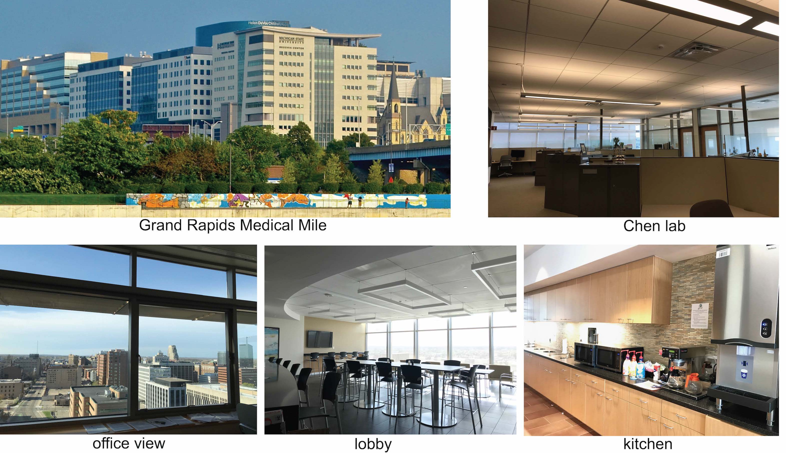

Chen lab resource introduction

PI Dr. Bin Chen was recruited to MSU from University of California San Francisco through the
MSU Global Impact Initiative in early 2018.
The Global Impact Initiative aims to recruit new researchers from the world to focus on the most challenging problems
facing human civilization. Dr. Chen holds a primary appointment in the
Department of Pediatrics and Human Development
with a secondary appointment in the
Department of Pharmacology and Toxicology in the
College of Human Medicine.
The resources and facilities are available through the College of Human Medicine and the University.
Chen lab is located on the 7th floor in the Secchia Center medical education building, in the heart of
Grand Rapids Medical
Mile. Chen lab has a number of cubicles and open tables for his lab members. The office is within walking distance
to the newly constructed state-of-the-art Grand Rapids Research Center (GRRC), which has space for up to 44 investigators
and houses core facilities,
Van Andel Research Institute , and
Spectrum Health. Chen lab can access to their core facilities
at internal billing rates, campus research resources as well as students. The secondary appointment in Pharmacology and
Toxicology allows Dr. Chen access to graduate students through the Biomolecular Science Gateway and also the vast resources
in the MSU East Lansing main campus, which is one hour away from the Grand Rapids campus. The flexible program at MSU allows
Dr. Chen mentoring students from the Department of Computer Science, the Department of Computational Mathematics, Science
and Engineering and the College of Osteopathic Medicine. To facilitate mentoring students and maintain collaboration with
other investigators in East Lansing, Dr. Chen has one office and a few open spaces in the life science building.
Founded in 1855, MSU enrolls more than 41,000 students in 14 colleges, which offer over 165 areas of undergraduate and
76 areas of graduate specialization, making it as one of the largest universities in the United States in
terms of enrollment. Dr. Chen can recruit talent from such a big pool. MSU employs approximately 3,000
faculty/staff members who are engaged in teaching, research and service. It has over 5,315 acres of land
and more than 400 buildings. Research at MSU is an integral part of the academic climate and is carried
on in all disciplines. There are more than 3,000 major research projects being pursued at the University.
Much of the research is multidisciplinary in nature and involves cooperation and collaboration between
engineers, basic scientists and clinical researchers.
Cisplatin, one of the most popular anti-cancer drugs,
was discovered and developed at MSU.
Dr. Chen has built up a team consisting of postdoctoral scholars, research assistants, undergraduates/graduates, medical
students. The lab always welcomes highly-motivated trainees. As a computational lab, Chen lab
is exploring new ways to keep high productivity. Chen lab primarily uses SLACK to communicate and manage
projects. Over one hundred messages are exchanged daily by lab members. For example, its lab orientation channel
shares all core resources and documents for new trainees to quickly pick up lab research; its lab technique
channel serves as an internal stackoverflow to foster technical knowledge sharing and learning; its lab
paper tracking channel shares the most recent interesting publications. Each project has its own channel
for project discussion and one google doc for project documentation. Besides, each project has one data
folder on AWS cloud and one code repository on GitHub. All key manuscripts are released in BioRxiv after
submission. We believe such management would encourage open data, open code, open science and reproducible
research.
Each full-time staff in Chen Lab is equipped with one Apple Mac laptop. The Lab actively works with cloud based resources
provided by Amazon Web Services for sequencing analysis and deep learning research. Each big project has
its dedicated instance. For example, lab members can easily process raw RNA-Seq data and make drug predictions
on one instance and run deep learning modules on another. Chen Lab uses the
iCER’s HPC clusters that include
596 compute nodes with more than 17,500 cores. Included in the clusters are 90 NVIDIA GPUs and 28 Xeon Phi
equipped nodes. Chen Lab has purchased the buy-in cluster equipped with 128+ GB RAM for regular computational
analysis.